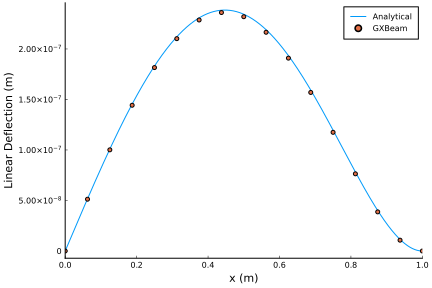
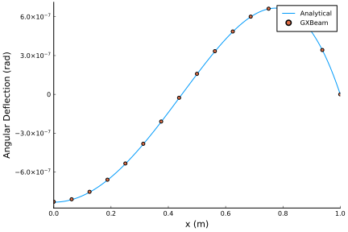
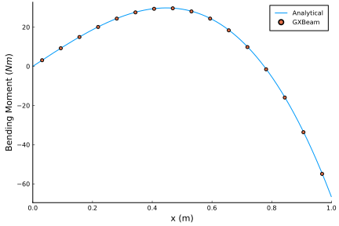

Overdetermined Beam
This example shows how to predict the behavior of a beam which is clamped at one end and simply supported at the other end when subjected to a linear distributed load.

This example is also available as a Jupyter notebook: overdetermined.ipynb.
using GXBeam, LinearAlgebra
nelem = 16
# create points
L = 1
x = range(0, L, length=nelem+1)
y = zero(x)
z = zero(x)
points = [[x[i],y[i],z[i]] for i = 1:length(x)]
# index of endpoints for each beam element
start = 1:nelem
stop = 2:nelem+1
# create compliance matrix for each beam element
EI = 1e7
compliance = fill(Diagonal([0, 0, 0, 0, 1/EI, 0]), nelem)
# create assembly
assembly = Assembly(points, start, stop, compliance=compliance)
# set prescribed conditions
prescribed_conditions = Dict(
# simply supported left endpoint
1 => PrescribedConditions(uz=0),
# clamped right endpoint
nelem+1 => PrescribedConditions(ux=0, uy=0, uz=0, theta_x=0, theta_y=0,
theta_z=0)
)
# create distributed load
qmax = 1000
distributed_loads = Dict()
for i = 1:nelem
distributed_loads[i] = DistributedLoads(assembly, i; s1=x[i],
s2=x[i+1], fz = (s) -> qmax*s)
end
# perform a static analysis
system, converged = static_analysis(assembly;
prescribed_conditions = prescribed_conditions,
distributed_loads = distributed_loads,
linear = true)
# post-process the results
state = AssemblyState(system, assembly;
prescribed_conditions = prescribed_conditions)An analytical solution to this over-determined problem can be found using the method of superposition using the analytical solutions to a cantilever with a linearly distributed load and a cantilever with an end load.
# construct analytical solution
x_a = range(0.0, L, length=1000)
w_a = @. qmax*(1-x_a)^2/(120*EI)*(4 - 8*(1-x_a) + 5*(1-x_a)^2 - (1-x_a)^3)
slope_a = @. -qmax*(1-x_a)/(120*EI)*(8 - 24*(1-x_a) + 20*(1-x_a)^2 - 5*(1-x_a)^3)
M_a = @. qmax/120*(8 - 48*(1-x_a) + 60*(1-x_a)^2 - 20*(1-x_a)^3)
theta_a = -atan.(slope_a)
# adjust coordinate system of analytical solution
M_a = -M_aPlotting the results reveals that the analytical and computational solutions show excellent agreement.
using Plots
pyplot()plot(
xlim = (0.0, 1.0),
xticks = 0.0:0.2:1.0,
xlabel = "x (m)",
ylabel = "Linear Deflection (m)",
grid = false,
overwrite_figure=false
)
x = [assembly.points[ipoint][1] + state.points[ipoint].u[1] for ipoint =
1:length(assembly.points)]
deflection = [state.points[ipoint].u[3] for ipoint = 1:length(assembly.points)]
plot!(x_a, w_a, label="Analytical")
scatter!(x, deflection, label="GXBeam")
plot!(show=true)
plot(
xlim = (0.0, 1.0),
xticks = 0.0:0.2:1.0,
xlabel = "x (m)",
ylabel = "Angular Deflection (rad)",
grid = false,
overwrite_figure=false
)
x = [assembly.points[ipoint][1] + state.points[ipoint].u[1]
for ipoint = 1:length(assembly.points)]
theta = [4*atan.(state.points[ipoint].theta[2]/4)
for ipoint = 1:length(assembly.points)]
plot!(x_a, theta_a, label="Analytical")
scatter!(x, theta, label="GXBeam")
plot!(show=true)
plot(
xlim = (0.0, 1.0),
xticks = 0.0:0.2:1.0,
xlabel = "x (m)",
ylabel = "Bending Moment (\$Nm\$)",
grid = false,
overwrite_figure=false
)
x = [assembly.elements[ielem].x[1] + state.elements[ielem].u[1] for ielem =
1:length(assembly.elements)]
M = [state.elements[ielem].M[2] for ielem = 1:length(assembly.elements)]
plot!(x_a, M_a, label="Analytical")
scatter!(x, M, label="GXBeam")
plot!(show=true)
Note that we could have easily performed a nonlinear analysis for this problem by setting linear=false.
This page was generated using Literate.jl.